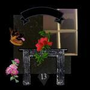
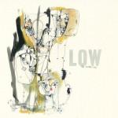
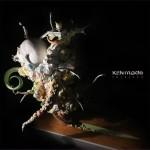
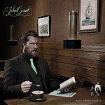
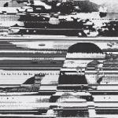
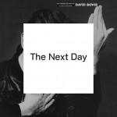
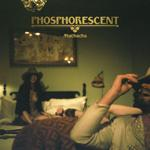
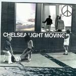

Music Reviews
-

Shlohmo Laid Out EP
Shlohmo continues his quest to go from being just another LA beat junkie to the very top of the pile.
Richard Petty lays out to Shlohmo's new EP... -
Wild Belle Isles
Chicago-via-Brooklyn siblings Natalie and Elliot Bergman deliver a first record with no pretensions other than creating warm atmospheres with their dub-infected pop songs.
Carlos Dávalos debuts in No Ripcord reviewing another debut. Wild Belle's dubby Isles. Happy bubble chasing. -

Low The Invisible Way
The venerable "slowcore" band's 10th full-length effort takes them into a slightly new direction, but still finds them at a happy confluence of beauty and drabness that shows their strengths as versatile, low-key performers.
Juan Edgardo Rodríguez rises up... -

KEN mode Entrench
KEN mode stands for "Kill Everything Now" mode, but if you've listened to the eleven tracks of their latest napalm strike, Entrench, you probably figured that out on your own.
Peter Quinton reviews the latest from KEN mode...and survives. -

John Grant Pale Green Ghosts
In the three years since the release of his solo debut, John Grant's had a bit of a tough time of it. Fortunately, for both him and us, he's managed to pick himself up and decided to write an album all about it.
Mark Davison waxes lyrical about lyrical wax... -
They Might Be Giants Nanobots
They Might Be Giants aren’t reinventing the wheel with their 16th studio album, but it still packs a nerdy punch. Same-same, but different.
Melissa Murphy reviews Nanobots by They Might Be Giants -

Stygian Stride Stygian Stride
Former Psychic Ills member, Jimmy SeiTang, returns with his latest solo project, Stygian Stride. Whilst formerly concerned with psychedlic rock and blues, SeiTang's latest takes a step away into electronic sampling and static abstract soundscapes.
Matt Bevington reviews... -

David Bowie The Next Day
A welcome addition to a great discography by one of music's greatest treasures.
Forrest Cardamenis looks to... -

Phosphorescent Muchacho
Phosphorescent is back with another album about heartbreak. Seriously, what would he write about if he was happy?
James McKenna reviews -

Chelsea Light Moving Chelsea Light Moving
While concerns about what the dissolution of the Moore-Gordon marriage meant for Sonic Youth may have been somewhat assuaged by last year's YokoKimThurston album, there's still no news about the future of the veteran group. Will the latest Moore side-project keep us occupied in the meantime?
Mark Davison takes a break from tracking down SY bootlegs & rarities...